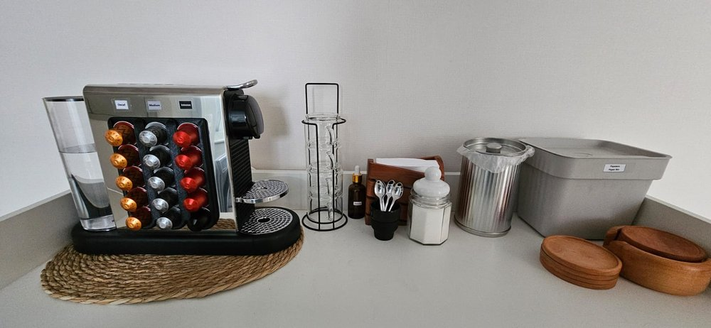
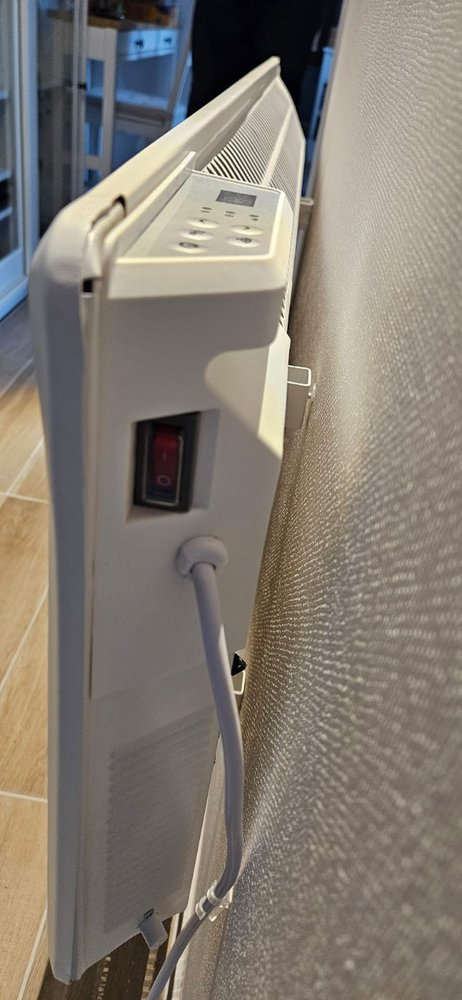
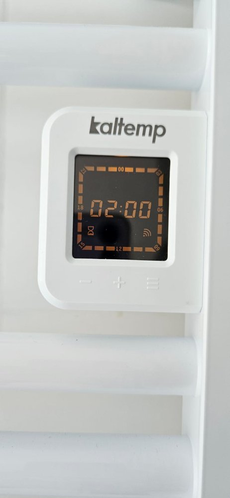
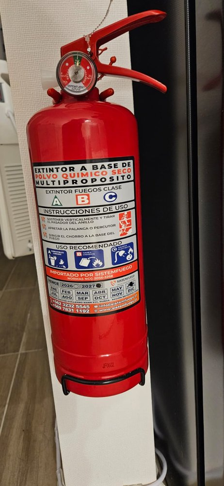
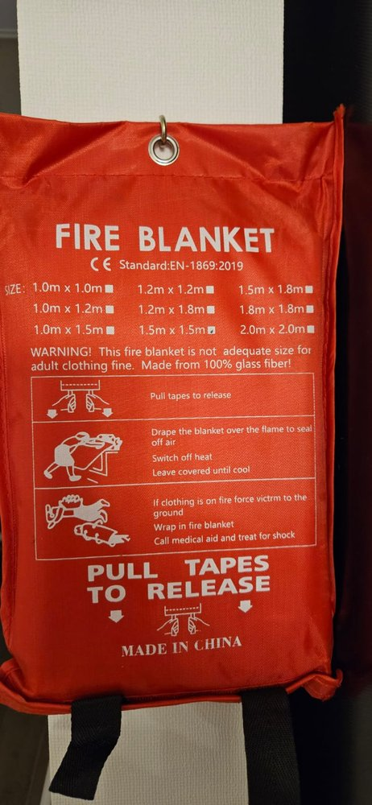
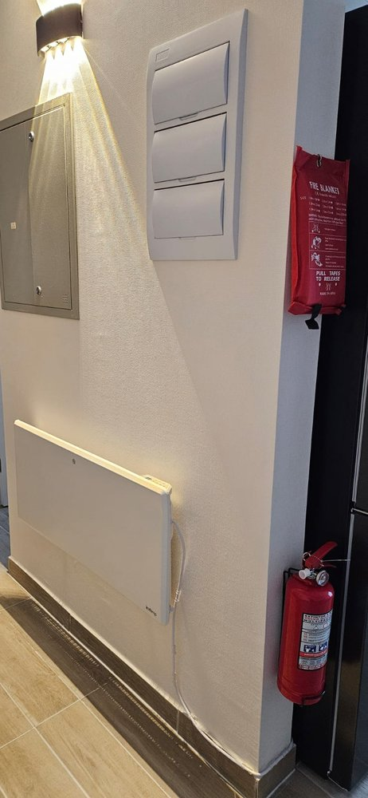

Depto 309 · Villarrica
Guía del huésped — cómo usar todo en el departamento.Guest guide — how to use everything in the apartment.
Bienvenido
Welcome
¡Bienvenido al Depto 309!Welcome to Apt 309!
Esta guía te muestra cómo usar todo en el departamento, paso a paso y con fotos. Elige un tema en el menú de la izquierda.
This guide shows you how to use everything in the apartment, step by step and with photos. Pick a topic from the left menu.
WiFi
La clave te la enviamos por el chat de Airbnb. Ver la pestaña WiFi.We send you the password via the Airbnb chat. See the WiFi tab.
Guías de aparatosAppliance guides
WiFi
Conéctate al WiFiConnect to WiFi
Nombre de la red · Network
Network name
Clave · Password
¿No la ves? Pídenosla por el chat de Airbnb.Can't find it? Ask us via the Airbnb chat.
- Abre los ajustes de WiFi en tu teléfono.Open your phone's WiFi settings.
- Toca la red Tommy-309.Tap the Tommy-309 network.
- Escribe la clave y listo.Type the password and you're done.
Llegada
Check-in
Cómo entrarHow to get in
Check-in desde las 15:00. El acceso es por conserjería (edificio con acceso controlado 24/7). No hay cerradura con código: el conserje te abre y te entrega las llaves.
Check-in from 3:00 PM. Access is through the concierge (building has 24/7 controlled access). There's no keypad lock: the concierge lets you in and hands you the keys.
Dirección · Address
Address
Estacionamiento: piso 3 (mismo piso del depto), espacio #94.Parking: 3rd floor (same floor as the apartment), space #94.
- El edificio está en Saturnino Epulef 1575, frente a la tienda Easy.The building is at Saturnino Epulef 1575, across from the Easy store.
- Entra por la calle lateral (Recabarren), primera entrada a la derecha.Enter through the side street (Recabarren), first entrance on the right.
- Toca el timbre para que el conserje te abra. Menciona el depto 309.Ring the bell so the concierge lets you in. Mention apartment 309.
- Retira las llaves con el conserje.Pick up the keys from the concierge.
Salida
Check-out
Antes de irteBefore you leave
Check-out hasta las 11:00.
Check-out by 11:00 AM.
- Apaga los aparatos eléctricos, sobre todo el calefactor de la entrada y el secatoallas del baño.Turn off the electric appliances, especially the heater at the entrance and the towel warmer in the bathroom.
- Apaga luces, cocina y horno. Cierra las ventanas.Turn off lights, stove and oven. Close the windows.
- Cierra la puerta con llave por fuera.Lock the door from the outside.
- Devuelve las llaves al conserje y menciona el número de depto (309).Return the keys to the concierge and mention the apartment number (309).
- Avísanos por el chat de Airbnb cuando hayas salido.Let us know via the Airbnb chat once you've left.
Reglas de la casa
House rules
Reglas de la casaHouse rules
Para una buena convivencia con los vecinos:
For good coexistence with the neighbors:
- Máximo 4 huéspedes.Maximum 4 guests.
- No fiestas, eventos ni reuniones.No parties, events or gatherings.
- No mascotas.No pets.
- No fumar dentro. Solo en el balcón, usa el cenicero; no arrojes colillas.No smoking indoors. Balcony only, use the ashtray; don't throw butts.
- Silencio 22:00–07:00. Evita ruidos molestos.Quiet hours 10:00 PM–7:00 AM. Avoid loud noise.
- El balcón no tiene malla: no arrojes nada y vigila a los niños en todo momento.The balcony has no safety net: don't throw anything and watch children at all times.
- Cocina/horno eléctricos y termo: úsalos con cuidado, no cocines sin supervisión y toma duchas moderadas.Electric stove/oven and water heater: use carefully, don't cook unattended, keep showers moderate.
- Delivery de comida OK. No uses la dirección para recibir encomiendas o paquetes.Food delivery is OK. Do not use the address to receive parcels or packages.
- Los consumibles de cortesía (café, té, aseo) son libres; el resto es inventario del depto.Courtesy consumables (coffee, tea, toiletries) are free; everything else is apartment inventory.
- Reporta cualquier daño por el chat de Airbnb.Report any damage via the Airbnb chat.
Cafetera
Coffee maker
Nespresso
Café en cápsula. Sin leche.
Capsule coffee. No milk.

- Revisa que el estanque de atrás tenga agua.Check the tank at the back has water.
- Pon una taza sobre la rejilla.Put a cup on the grid.
- Sube la palanca de arriba, pon una cápsula y baja la palanca.Lift the top lever, drop in a pod, and lower the lever.
- Aprieta el botón de taza chica (café corto) o taza grande (café largo).Press the small cup (short coffee) or big cup (long coffee) button.
- Se detiene solo. Sube y baja la palanca para botar la cápsula usada.It stops by itself. Lift and lower the lever to drop the used pod.
Radio
Radio Philco
Toca radio (FM/AM), Bluetooth desde tu teléfono, o un pendrive.
Plays radio (FM/AM), Bluetooth from your phone, or a USB stick.
- Gira la perilla de encendido hasta que haga clic.Turn the power knob until it clicks.
- Con el selector, elige: Radio, Bluetooth o pendrive.With the selector, pick: Radio, Bluetooth, or USB.
- Radio: gira la perilla de sintonía hasta oír claro. Bluetooth: conéctate a "Philco"/"VT329" en tu teléfono.Radio: turn the tuning knob until it's clear. Bluetooth: connect to "Philco"/"VT329" on your phone.
- Ajusta el volumen con la perilla.Adjust the volume with the knob.
Calefactor
Heater
CalefactorHeater
Tiene un interruptor rojo al costado y botones en el panel de arriba.
It has a red switch on the side and buttons on the top panel.

- Pon el interruptor rojo del costado en I.Set the red side switch to I.
- En el panel de arriba, aprieta ⏻ para prender el calor.On the top panel, press ⏻ to turn on the heat.
- Sube con › y baja con ‹. La pantalla muestra el número.Raise with › and lower with ‹. The screen shows the number.
- Para apagar, aprieta ⏻. Si te vas, deja el interruptor rojo en O.To turn off, press ⏻. If you leave, set the red switch to O.
Secatoallas
Towel warmer
SecatoallasTowel warmer
Entibia y seca tus toallas. Tres botones debajo de la pantalla.
Warms and dries your towels. Three buttons below the screen.

123- Aprieta el botón 3 ≡ para prenderlo.Press button 3 ≡ to turn it on.
- Sube el calor con 2 +, bájalo con 1 −.Raise the heat with 2 +, lower it with 1 −.
- Cuelga la toalla. En 20–40 min queda tibia.Hang your towel. In 20–40 min it's warm.
- Para apagar, aprieta ≡ otra vez.To turn off, press ≡ again.
Lavadora
Washer
Lavadora-Secadora LGLG Washer-Dryer
Lava y también seca. Es inteligente (AIDD): pesa y detecta la tela sola y ajusta el lavado. Casi todo lo hace ella.
Washes and also dries. It's smart (AIDD): it weighs and senses the fabric on its own and adjusts the wash. It does almost everything for you.
Cómo lavarHow to wash
- Aprieta Encendido.Press Power.
- Abre la puerta y mete la ropa. Deja un palmo libre arriba.Open the door and load the clothes. Leave a hand's width free at the top.
- Pon una tapita de detergente (o una cápsula) en el cajón de arriba a la izquierda.Put one cap of detergent (or one pod) in the drawer at the top left.
- Cierra la puerta.Close the door.
- Gira el dial a Algodón.Turn the dial to Cotton.
- Aprieta Inicio.Press Start.
- Espera a que suene. La puerta se destraba sola.Wait for the beep. The door unlocks by itself.
- Para secar: saca la mitad de la ropa, gira el dial a Lavado y secado y aprieta Inicio.To dry: take out half the load, turn the dial to Wash & dry and press Start.
Los botonesThe buttons
La Temperatura y el Centrifugado los elige el programa solo — no hace falta tocarlos.The program sets Temperature and Spin for you — no need to touch them.
Programas — gira el dialPrograms — turn the dial
Aprovecha la lavadoraMake the most of it
CuidadosCare
Seguridad · Extintor
Safety · Extinguisher
ExtintorFire extinguisher
Está en el pasillo. Solo para fuego pequeño.
It's in the hallway. Only for a small fire.

1234- Tira el anillo 1 hacia afuera.Pull the pin 1 out.
- Apunta la manguera 3 a la base del fuego (no a las llamas).Aim the hose 3 at the base of the fire (not the flames).
- Aprieta la palanca 2 y mueve de lado a lado.Squeeze the lever 2 and sweep side to side.
Seguridad · Manta
Safety · Blanket
Manta ignífugaFire blanket
Junto al extintor. Ideal para fuego de cocina (sartén, aceite).
Next to the extinguisher. Best for kitchen fires (pan, oil).

12- Tira las dos cintas 1 2 hacia abajo. La manta sale.Pull the two tapes 1 2 down. The blanket comes out.
- Tapa el fuego con la manta y apaga la cocina.Cover the fire with the blanket and switch off the stove.
- Déjala encima hasta que se enfríe.Leave it on until it cools down.
Emergencias
Emergency
Números de emergenciaEmergency numbers
Anfitrión · Host
Host
El edificio tiene conserjería 24/7 en la entrada.The building has a 24/7 concierge at the entrance.
¿Dónde está la seguridad?Where is the safety gear?
